Același pacient, a treia oară
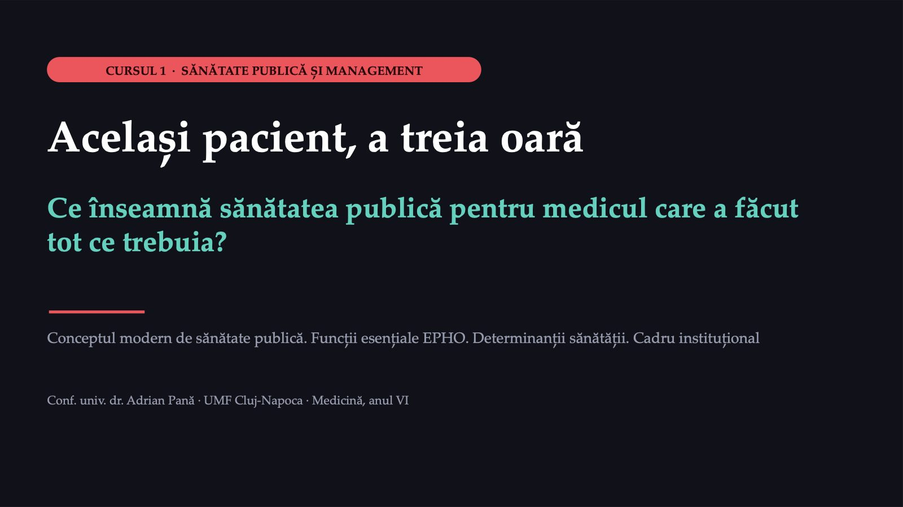
1 / 43Trei cazuri în două ore
![HARTA ȘEDINȚEI Trei cazuri în două ore Garda Cabinetul Secția Kahoot 0′ 6′ 34′ 66′ 76′ 98′ 110′ 120′ Pauză Final Același pacient, a treia oară: ce este sănătatea publică Un caz de rujeolă: cine face sănătatea publică Pacienta care se reinternează: determinanții Trei termeni noi: operațiunile esențiale de sănătate publică · determinanții sociali · gradientul social. Jumătate din timp lucrați dumneavoastră: vot pe telefon, perechi, tabere, un joc de rol. Aveți nevoie de un telefon cu acces la internet.](diapozitive/C01/002.jpg) 2 / 43
2 / 4360%
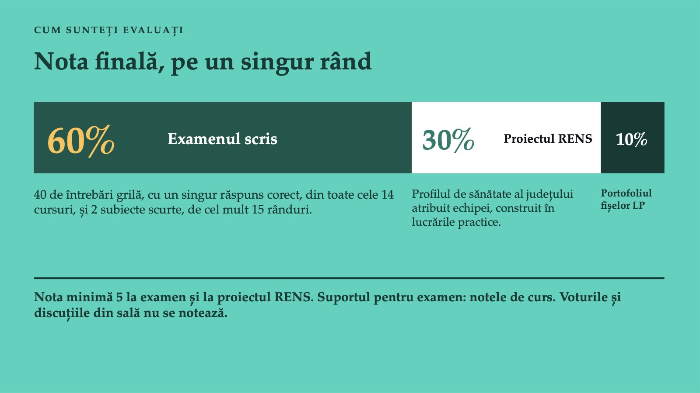
3 / 43Același pacient, a treia oară
![GARDA · CARDIOLOGIE, A DOUA NOAPTE Același pacient, a treia oară FOAIE DE OBSERVAȚIE · EXTRAS Bărbat, cincizeci și cinci de ani Fumător de treizeci de ani Hipertensiv · obezitate Motivul internării: durere toracică A treia internare în doi ani Electrocardiograma, troponina, coronarografia și tratamentul urmează protocolul. După câteva zile, pacientul pleacă acasă cu o rețetă și cu sfatul de a se lăsa de fumat. Decizia clinică a fost corectă. Ce înseamnă sănătatea publică pentru medicul care a făcut tot ce trebuia la patul acestui pacient? Scenă reconstituită; pacientul este fictiv.](diapozitive/C01/004.jpg) 4 / 43
4 / 43Fraza pe care ați adus-o
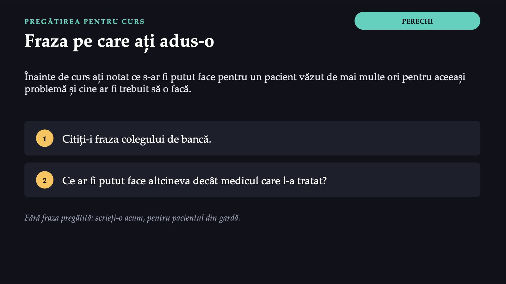
5 / 43Sănătatea publică începe cu a doua întrebare
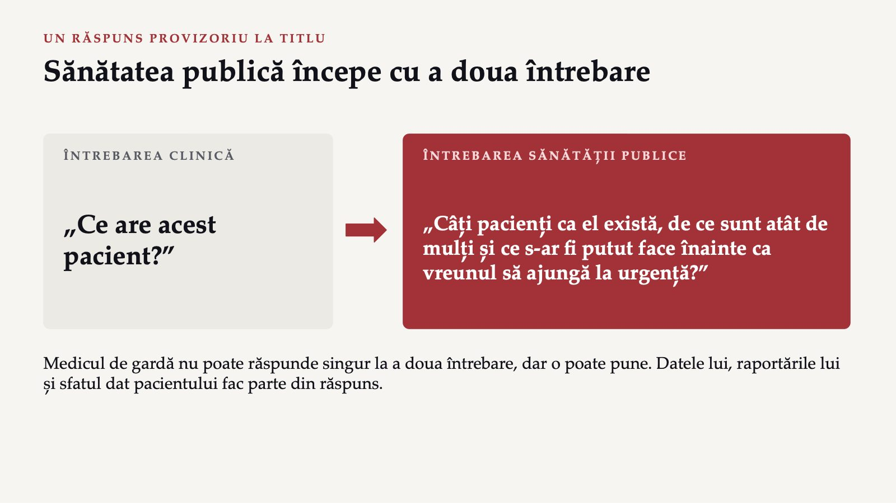
6 / 43Care dintre aceste decizii este de sănătate publică?
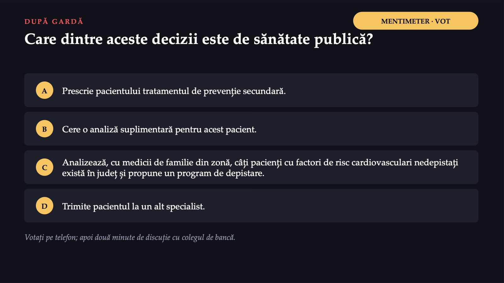
7 / 43Răspunsul apare după ședință
Răspunsul apare după ședință
Același medic, două unități de analiză
![MEDICINA CLINICĂ ȘI SĂNĂTATEA PUBLICĂ Același medic, două unități de analiză Medicina clinică Sănătatea publică Unitatea de analiză pacientul populația sau comunitatea Obiectivul principal diagnosticul și tratamentul bolii prevenția, promovarea sănătății, protecția populației Momentul intervenției de regulă, după apariția simptomelor de regulă, înainte de apariția bolii Instrumentele examenul clinic, investigațiile, tratamentul supravegherea, epidemiologia, politicile, legislația, programele Măsura succesului pacientul vindecat sau ameliorat boala mai rară și diferențe mai mici între grupuri Comparație didactică, construită pentru acest curs: descrie accente, nu granițe rigide; același medic lucrează adesea în ambele registre.](diapozitive/C01/009.jpg) 9 / 43
9 / 43O definiție veche de un secol, lărgită pe drum
![CE ESTE SĂNĂTATEA PUBLICĂ O definiție veche de un secol, lărgită pe drum 1920 Winslow, Science Știința și arta de a preveni boala și de a prelungi viața, prin eforturile organizate ale comunității. 1946 Constituția OMS Sănătatea: o stare de complet bine fizic, mintal și social, nu doar absența bolii. 1988 Raportul Acheson O definiție concisă, apropiată de cea a lui Winslow. 1998 Glosarul OMS „Comunitatea” devine „societatea”: un concept social și politic. 95/2006 Legea sănătății Separă starea de sănătate a populației de efortul care o protejează. 2012 Planul european OMS Aceeași definiție, cu trimitere la raportul Acheson. Sănătatea publică: știința și arta de a promova sănătatea, de a preveni boala și de a prelungi viața prin eforturile organizate ale societății. Definiția: glosarul OMS de promovare a sănătății (1998), adaptată după raportul Acheson (1988).](diapozitive/C01/010.jpg) 10 / 43
10 / 43Numai una din cinci direcții privește serviciile medicale
![WINSLOW, 1920 · TEXTUL COMPLET Numai una din cinci direcții privește serviciile medicale 1 salubrizarea mediului 2 controlul infecțiilor din comunitate 3 educarea fiecărei persoane în igiena personală 4 organizarea serviciilor medicale și de nursing pentru diagnosticul precoce și tratamentul preventiv 5 un mecanism social care să asigure fiecăruia un nivel de trai adecvat menținerii sănătății Enumerarea se încheie cu nivelul de trai, o condiție socială: deschiderea spre ceea ce astăzi se numește determinanții sociali ai sănătății.](diapozitive/C01/011.jpg) 11 / 43
11 / 43Efortul și starea: două noțiuni, două nume
![LEGEA NR. 95/2006 · O DISTINCȚIE DE EXAMEN Efortul și starea: două noțiuni, două nume ASISTENȚA DE SĂNĂTATE PUBLICĂ „efortul organizat al societății în vederea protejării și promovării sănătății populației” prin politici și legi, prin programe adresate determinanților și prin instituțiile care furnizează serviciile = activitatea SĂNĂTATEA PUBLICĂ „starea de sănătate a populației în raport cu determinanții stării de sănătate” socio-economici, biologici, de mediu, stilul de viață, serviciile de sănătate, calitatea și accesibilitatea lor = starea Winslow și glosarul OMS le reunesc pe amândouă sub același nume; legea le separă. Sursa: Legea nr. 95/2006 privind reforma în domeniul sănătății, forma consolidată; extrase.](diapozitive/C01/012.jpg) 12 / 43
12 / 4376,5 · 81,5
![CÂT DE DEPARTE ESTE ROMÂNIA Decese sub 75 de ani care puteau fi evitate Prevenibile: prin prevenție și sănătate publică România 264,0 UE 150,9 cu aproximativ trei sferturi mai mult Tratabile: prin îngrijire la timp și eficace România 199,7 UE 86,8 de peste două ori mai mult Rate standardizate la 100 000 de locuitori, 2023 76,5 · 81,5 ani de viață la naștere, România și UE, 2024: o diferență de 5,0 ani (estimări) 5,8% · 9,9% din PIB, cheltuielile curente cu sănătatea, România și UE, 2023 Sursa: Eurostat (lista comună OCDE–Eurostat a deceselor evitabile; speranța de viață 2024, valori estimate, UE și provizorie; cheltuielile cu sănătatea).](diapozitive/C01/013.jpg) 13 / 43
13 / 43Două intervenții fără nicio rețetă
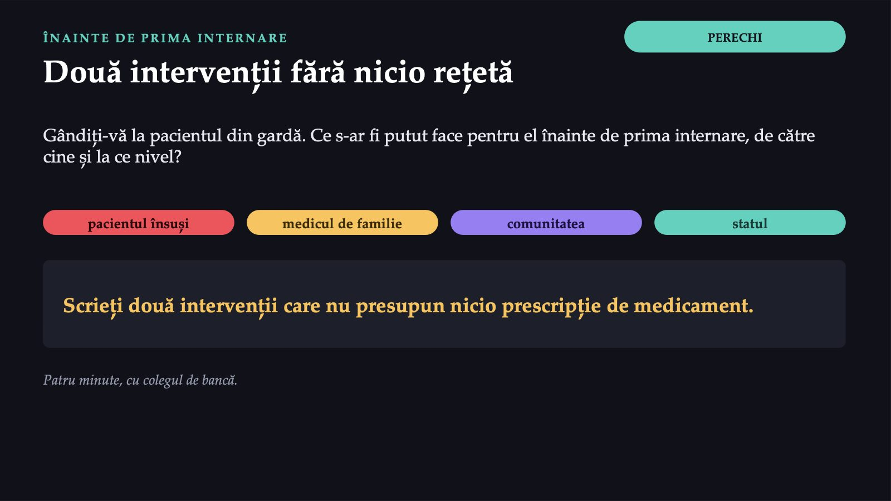
14 / 43Cazul de rujeolă din cabinet
![Erupția din rujeolă, în a patra zi (fotografie de arhivă) Foto: CDC/NIP/Barbara Rice · domeniu public · CDC PHIL, via Wikimedia Commons CABINETUL DE MEDICINA FAMILIEI Cazul de rujeolă din cabinet Sunteți rezident de medicina familiei. O mamă vine cu un copil de doi ani: febră, conjunctivită și o erupție care a început în spatele urechilor. Copilul nu este vaccinat. Tratamentul lui este simplu și simptomatic. Ce urmează după ce mama pleacă din cabinet? Fiecare pas de aici înainte corespunde unei funcții pe care un sistem de sănătate publică trebuie să o îndeplinească.](diapozitive/C01/015.jpg) 15 / 43
15 / 43Un singur cuvânt
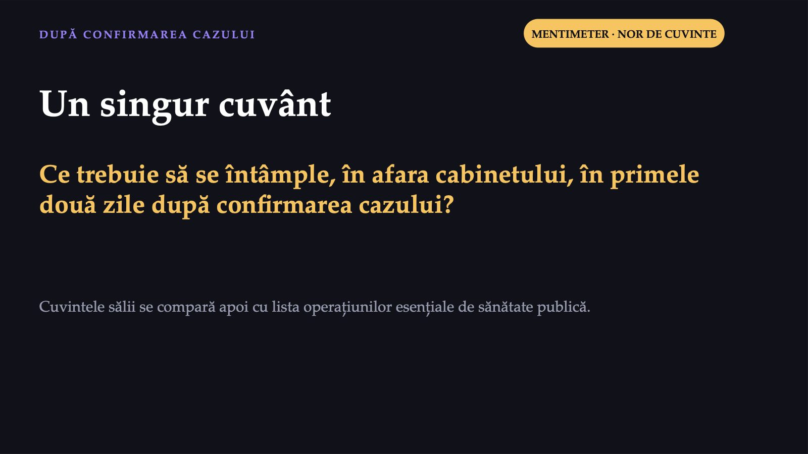
16 / 43Explozie de cazuri de rujeolă în România: doar 1 din 4 copii e vaccinat
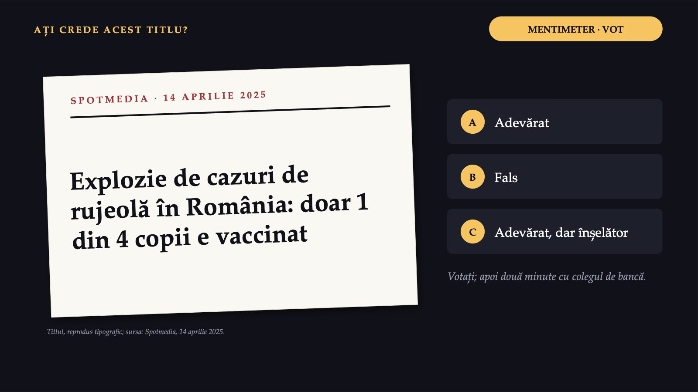
17 / 43Răspunsul apare după ședință
Răspunsul apare după ședință
Operațiunile esențiale de sănătate publică (EPHO)
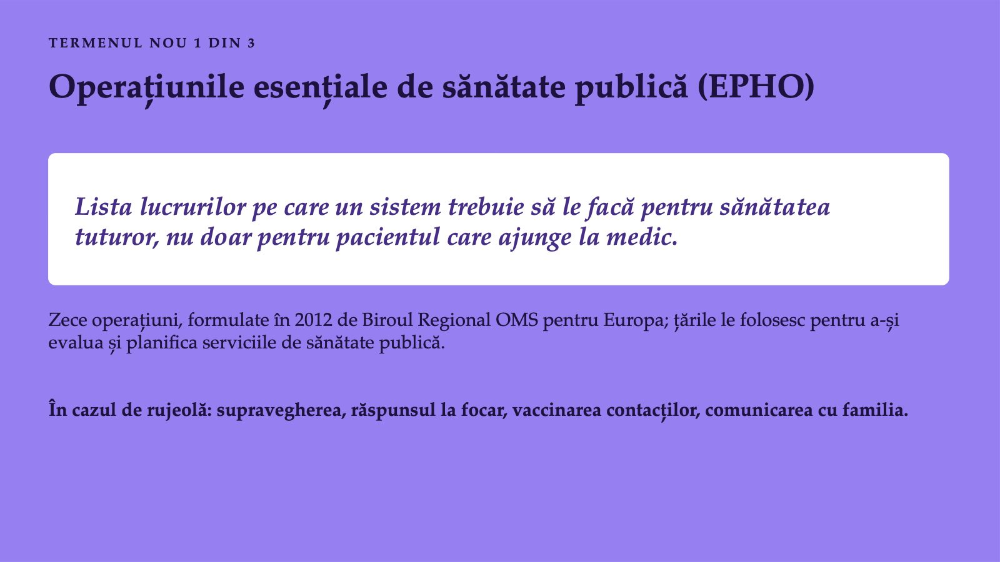
19 / 43Zece operațiuni, în două grupe de câte cinci
![PLANUL EUROPEAN OMS, 2012 Zece operațiuni, în două grupe de câte cinci OPERAȚIUNI DE BAZĂ · EPHO 1–5 1 Supravegherea sănătății și a stării de bine informare 2 Pericolele și urgențele: monitorizare și răspuns informare 3 Protecția sănătății 4 Promovarea sănătății 5 Prevenirea bolilor, cu depistarea precoce CARE LE FAC POSIBILE · EPHO 6–10 6 Guvernanța pentru sănătate 7 Forța de muncă din sănătatea publică 8 Structurile organizaționale și finanțarea 9 Pledoaria, comunicarea, mobilizarea socială 10 Cercetarea în sănătatea publică informare EPHO 3, 4 și 5: serviciile propriu-zise. Gruparea de informare (1, 2 și 10) se suprapune peste cele două grupe. Sursa: Biroul Regional OMS pentru Europa, planul european de acțiune (2012). Pentru examen se folosește gruparea din 2012.](diapozitive/C01/020.jpg) 20 / 43
20 / 43Un serviciu fără operațiunile care îl fac posibil rămâne o clădire goală
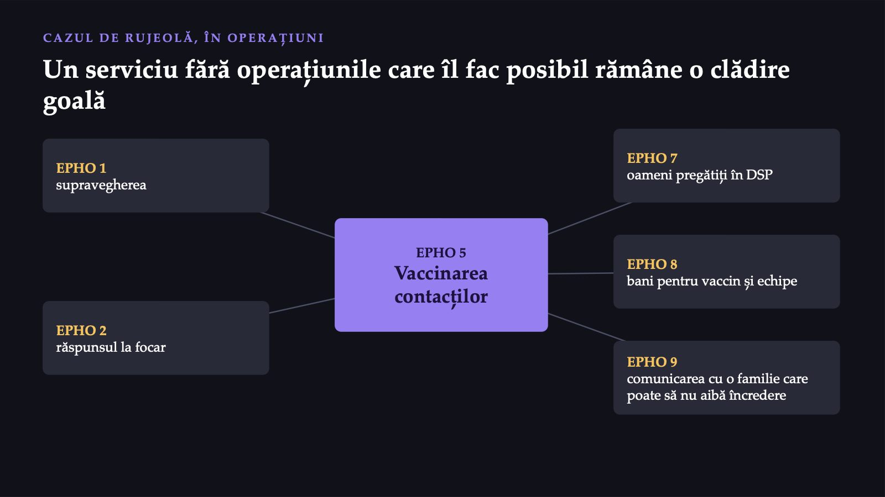
21 / 43În ce ordine ați investi?
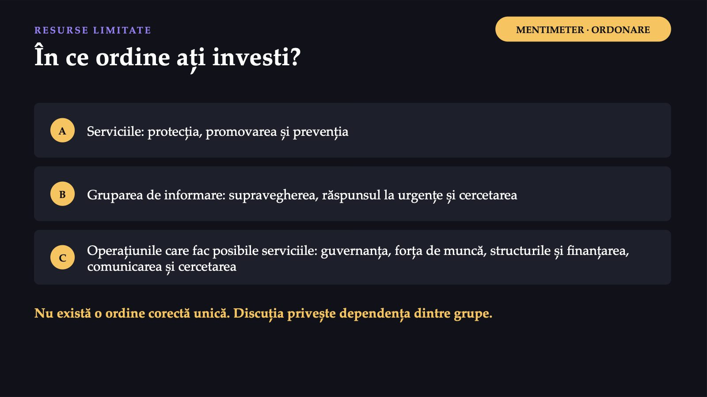
22 / 43Aceeași idee, mai multe liste
![DE UNDE VIN ȘI CE A URMAT Aceeași idee, mai multe liste 1988 IOM, SUA Trei funcții de bază: evaluarea, dezvoltarea politicilor, asigurarea. 1994 Zece servicii, SUA Revizuite în 2020, cu echitatea în centru. 2012 Zece EPHO Biroul Regional OMS pentru Europa. 2015 Autoevaluarea Instrumentul european: criterii verificabile pentru fiecare operațiune. 2021 12 funcții, OMS Lista globală unificată (EPHF). 2024 Ghidul OMS Aplicarea celor 12 funcții; ordinea listei nu are semnificație. Lista globală numește distinct implicarea comunității, calitatea și echitatea serviciilor și accesul la produse și tehnologii pentru sănătate.](diapozitive/C01/023.jpg) 23 / 43
23 / 431978
![ASISTENȚA MEDICALĂ PRIMARĂ Cazul a început într-un cabinet de medicina familiei 1978 Alma-Ata Asistența medicală primară, cheia obiectivului „Sănătate pentru toți”: îngrijire esențială, accesibilă universal, cu participarea comunității, la un cost pe care țara și-l poate permite. 2018 Astana O nouă declarație reafirmă rolul central al asistenței primare și reînnoiește angajamentul politic al guvernelor. Nivel de îngrijire (cabinetul) și abordare a sistemului (acces universal, participare, acțiune intersectorială): medicul de familie din caz lucrează în ambele sensuri.](diapozitive/C01/024.jpg) 24 / 43
24 / 43Instituțiile din spatele cazului
![LEGEA NR. 95/2006 · CINE FACE SĂNĂTATEA PUBLICĂ Instituțiile din spatele cazului Ministerul Sănătății autoritatea centrală DSP județene și a municipiului București servicii deconcentrate, cu personalitate juridică INSP în subordinea MS: îndrumă tehnic rețeaua, supraveghează starea de sănătate CNSCBT Registrul unic de boli transmisibile (HG nr. 657/2022) CNAS asigurările sociale de sănătate; casele județene în subordine ANMCS în subordinea Guvernului: standardizează, evaluează, acreditează (Legea nr. 185/2017) INS nu este în rețeaua MS; publică numitorii indicatorilor](diapozitive/C01/025.jpg) 25 / 43
25 / 43De la cabinet la nivel european și global
![DRUMUL INFORMAȚIEI · ILUSTRARE SIMPLIFICATĂ De la cabinet la nivel european și global Medicul de familie raportează cazul DSP investighează focarul, vaccinează contacții INSP, prin CNSCBT registrul unic, analiza națională ECDC analiza pentru întreaga Uniune OMS Regulamentul Sanitar Internațional (2005) În Uniune, rețeaua de supraveghere funcționează după Regulamentul (UE) 2022/2371; la Comisie, politica de sănătate ține de DG SANTE. OMS definește urgența de sănătate publică de importanță internațională: un eveniment extraordinar, cu risc pentru alte state prin răspândirea bolii. Ilustrare construită pentru acest curs pe baza rolurilor stabilite de lege; nu este procedura pas cu pas a supravegherii rujeolei.](diapozitive/C01/026.jpg) 26 / 43
26 / 43Trei minute la telefon
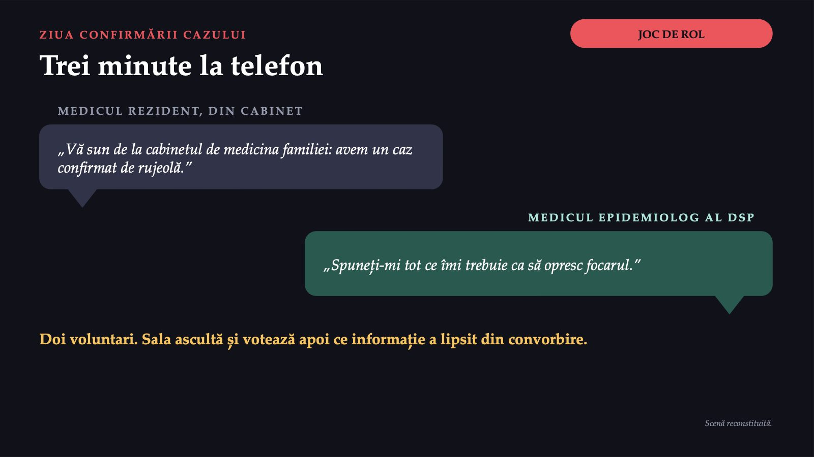
27 / 4310′
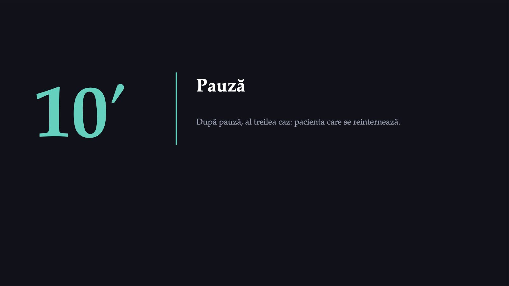
28 / 43Pacienta care se reinternează
![Un sat de deal din România Foto: Delia2 · CC BY-SA 4.0 · Wikimedia Commons SECȚIA DE MEDICINĂ INTERNĂ Pacienta care se reinternează Salonul trei: șaptezeci și patru de ani, insuficiență cardiacă, a patra internare în acest an. Tratamentul este corect. Abia acum aflați ce nu apărea în foaia de observație: locuiește singură, într-un sat departe de oraș; pensia îi ajunge greu pentru medicamente și lemne; medicul de familie are cabinetul în altă comună. Fiecare internare a fost tratată ca un episod medical. Unde sunt cauzele?](diapozitive/C01/029.jpg) 29 / 43
29 / 43Ce explică cel mai bine reinternările pacientei?
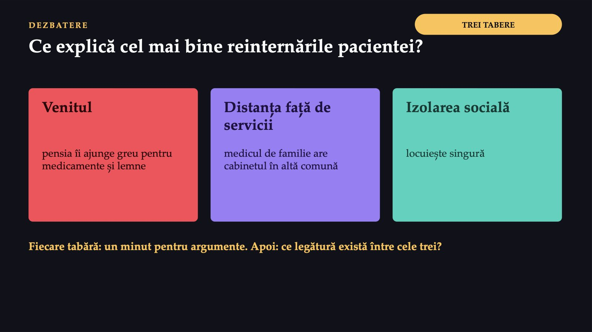
30 / 43Răspunsul apare după ședință
Răspunsul apare după ședință
„Harta teritoriului sănătății”: patru elemente egale
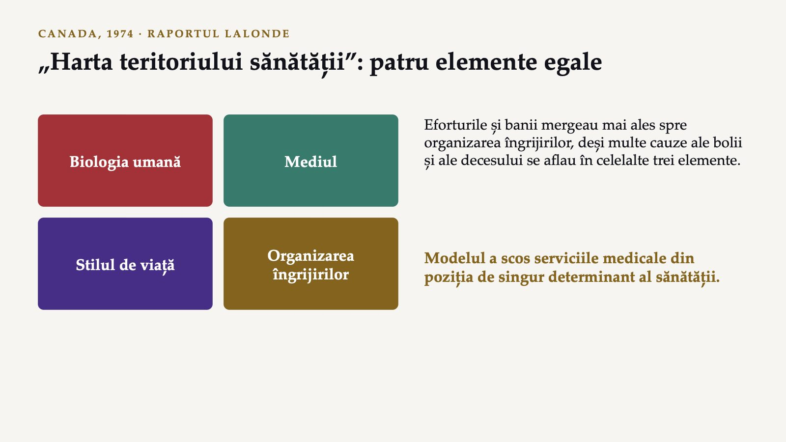
32 / 43Straturi de influență în jurul persoanei
![PERECHI DAHLGREN ȘI WHITEHEAD, 1991 Straturi de influență în jurul persoanei Condițiile socio-economice, culturale și de mediu Condițiile de viață și de muncă, inclusiv serviciile de sănătate Rețelele sociale și comunitare Stilul de viață Vârsta, sexul Centrul (vârsta, sexul, factorii constituționali) nu este un strat. Plasați pe straturi situația pacientei: dieta și aderența la tratament locuiește singură locuința greu de încălzit drumul până la medicul de familie nivelul pensiilor Modelul nu dă ponderi numerice straturilor.](diapozitive/C01/033.jpg) 33 / 43
33 / 43Răspunsul apare după ședință
Răspunsul apare după ședință
Determinanții sociali ai sănătății
![TERMENUL NOU 2 DIN 3 Determinanții sociali ai sănătății Tot ce se întâmplă cu sănătatea unei persoane în afara cabinetului: unde se naște, crește, trăiește, muncește și îmbătrânește. Comisia OMS pentru determinanții sociali, 2008, „Closing the gap in a generation”: aceste condiții sunt modelate de distribuția puterii, a banilor și a resurselor. Trei principii de acțiune: condițiile vieții de zi cu zi distribuția puterii, a banilor și a resurselor măsurarea problemei și evaluarea acțiunii Pentru pacientă: pensia, lemnele, satul, drumul până la medic.](diapozitive/C01/035.jpg) 35 / 43
35 / 43Treaptă cu treaptă: sănătatea pe cincimi de venit
![TERMENUL NOU 3 DIN 3 · GRADIENTUL SOCIAL Treaptă cu treaptă: sănătatea pe cincimi de venit „Cu fiecare treaptă de venit sau de educație în plus, sănătatea este, în medie, puțin mai bună.” 57,3 67,0 cea mai săracă 61,1 64,4 a doua 67,8 70,6 a treia 73,2 77,5 a patra 79,3 86,1 cea mai bogată cincimea de venit UE România Ponderea persoanelor de 16 ani și peste care își declară sănătatea bună sau foarte bună, 2025, %. UE: crește la fiecare treaptă. România: a doua cincime sub prima, apoi creștere. Între extreme: 19,1 puncte procentuale în România, 22,0 în UE. Sursa: Eurostat, ancheta UE privind veniturile și condițiile de viață (hlth_silc_10), 2025.](diapozitive/C01/036.jpg) 36 / 43
36 / 4373,3%
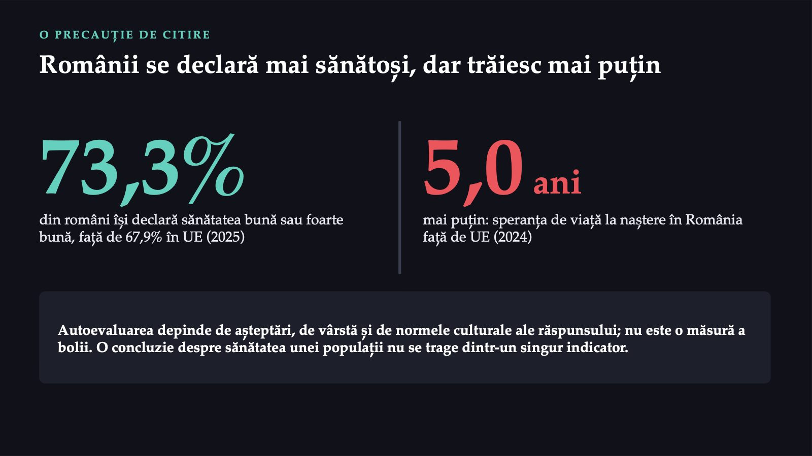
37 / 43Ce poate face medicul de pe secție
![DE LA DETERMINANȚI LA ACȚIUNE Ce poate face medicul de pe secție Structural politicile: protecția socială, educația, locuința, transportul, sănătatea în toate politicile Comunitar programele: asistența medicală comunitară, mediatorii sanitari, rețelele de sprijin Individual educația pentru sănătate, sprijinul pentru autoîngrijire, depistarea activă Medicul nu poate schimba pensia pacientei. Poate afla de ce se reinternează, poate implica asistentul social și asistentul medical comunitar, poate vorbi cu medicul de familie și poate raporta problema celor care decid. Cele trei niveluri: sinteză didactică a cursului. Raportul Marmot (Anglia, 2010): șase obiective de politică pentru reducerea inechităților de sănătate.](diapozitive/C01/038.jpg) 38 / 43
38 / 43Garda, cabinetul, secția: zece întrebări
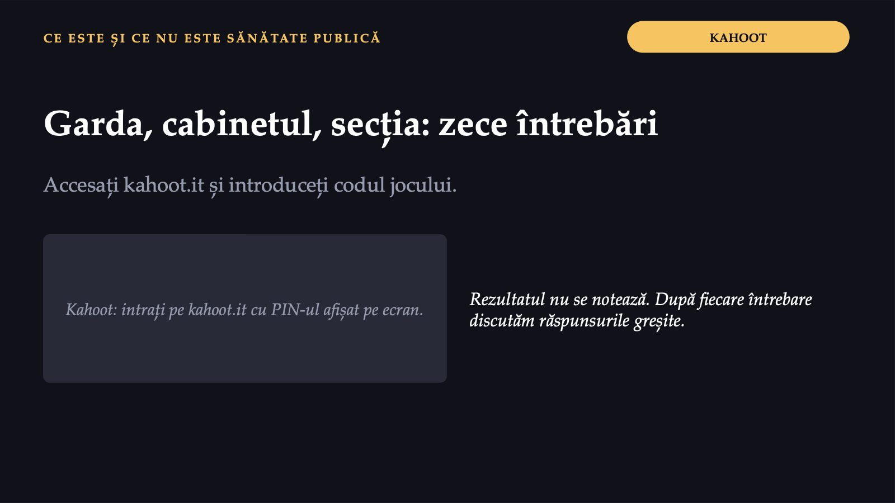
39 / 43Răspunsul apare după ședință
Răspunsul apare după ședință
Cinci idei din cursul de azi
![DE REȚINUT Cinci idei din cursul de azi 1 Sănătatea publică: știința și arta de a preveni boala, de a prelungi viața și de a promova sănătatea prin eforturile organizate ale societății. 2 Legea română: „asistența de sănătate publică” este efortul; „sănătatea publică”, starea de sănătate a populației. 3 EPHO, 2012: cinci operațiuni de bază și cinci care le fac posibile, plus gruparea de informare; OMS: o listă globală de 12 funcții. 4 Asistența medicală primară, de la Alma-Ata (1978) la Astana (2018): locul unde clinica și sănătatea publică se întâlnesc zilnic. 5 Determinanții merg de la comportamente la condițiile de viață și la distribuția puterii și a resurselor; gradientul urmează scara socială.](diapozitive/C01/041.jpg) 41 / 43
41 / 43Ce faceți diferit la gardă, în cabinet și pe secție
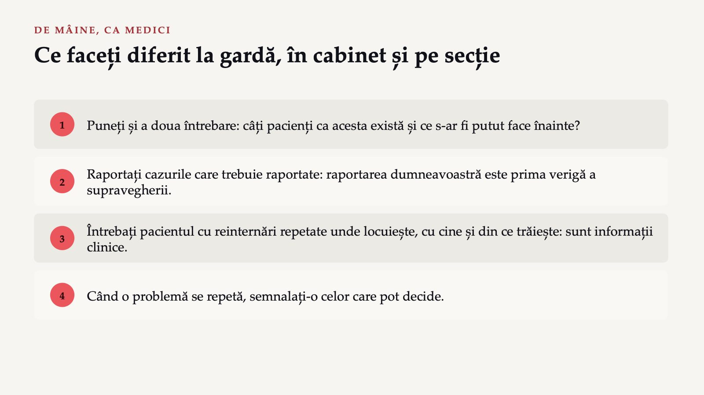
42 / 43Trei întrebări pentru final
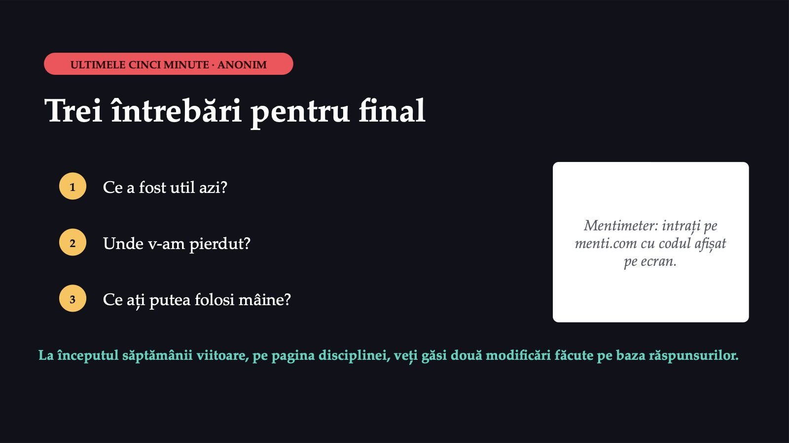
43 / 43Săgeți sau spațiu: navigare · O: vedere de ansamblu · N: notele prezentatorului · F: ecran complet · Esc: închidere